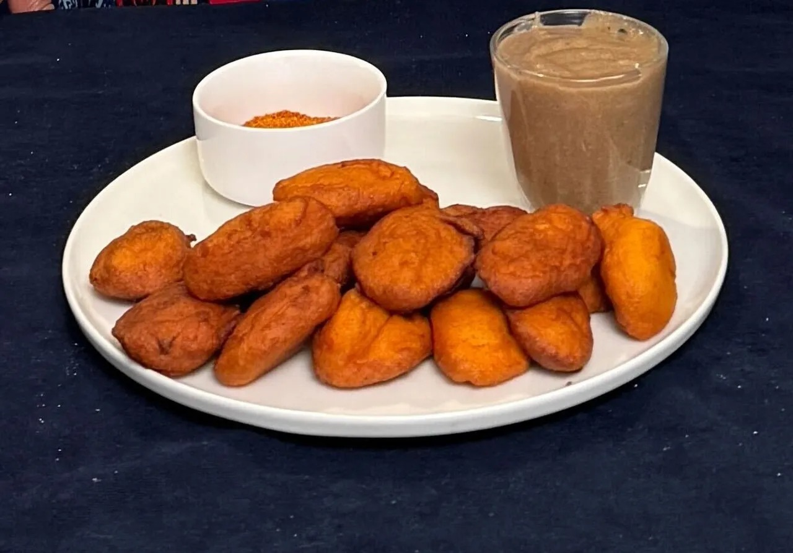
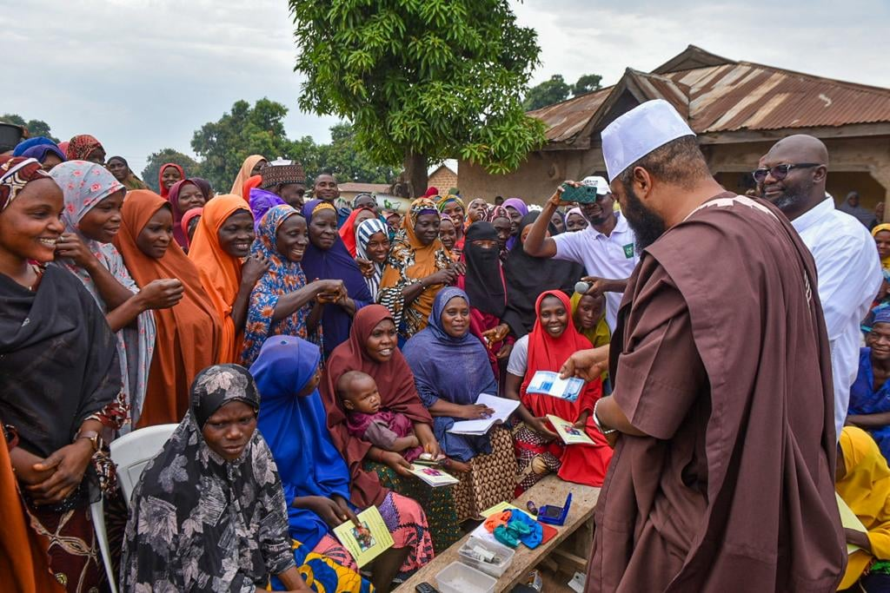

En Guinée, la journée commence très tôt. Les fidèles se lèvent à 4h du matin pour le Suhur, puis accomplissent la prière de Fajr. Malgré la fatigue, la vie professionnelle et scolaire continue à un rythme plus calme.
🤝 Solidarité
L'Iftar se fait en groupe — chacun apporte un plat, et le repas est partagé ensemble dans un esprit de convivialité. Des associations distribuent même de la nourriture dans les embouteillages pour que personne ne rompe le jeûne seul.
🍽️ Saveurs du Ramadan
Foutti / LafidiTôBissapJus de GingembreBouillie de MaïsRiz au Lait
🎥 Traditions Guinéennes
🍲 Foutti — Le plat emblématique
🇬🇳
Les Saveurs de Guinée
Dattes
Jus de Bissab (Hibiscus)
Le Foutti
Tô — Poudre de Manioc

Beignets de l'Iftar · Foutti servi au coucher du soleil
🇳🇪
Niger
« Fraternité & Hospitalité »
☀️ La Journée — Spiritualité
La chaleur intense ralentit le rythme. La population se consacre au jeûne, à la prière et à l'écoute des prêches. Un temps de recueillement profond.
🌅 Le Crépuscule — Solidarité
À l'heure de l'Iftar, on déploie des nattes dans la rue pour partager le repas entre voisins et passants. Personne ne mange seul au Niger.
🌙 La Nuit — Vie Sociale
Après la prière de Tarawih, les températures baissent et les rues s'animent. Les familles se visitent, les marchés restent ouverts tard dans une ambiance joyeuse.
🌙 Iftar communautaire — tous ensemble sous le ciel

🤲 Distribution de nourriture — Zakat al-Fitr
« Le Ramadan nigérien est l'expression ultime de notre fraternité. »
🇳🇪
Solidarité au Niger
Iftar collectif dans la rue — une tradition nigérienne
Distribution alimentaire du Ramadan
Les 4 moments forts
☀️ Journée — Spiritualité
🌅 Crépuscule — Solidarité
🍲 Repas — Traditions
🌙 Nuit — Vie Sociale
🇲🇱
Mali
« Foi, Prière, Partage & Solidarité »
🕌 Spiritualité
Pays majoritairement musulman, le Mali vit le Ramadan intensément. Les fidèles multiplient les prières, lisent le Coran, demandent pardon et cultivent la patience. Les conflits et les mauvaises paroles sont évités.
🍽️ L'Iftar au Mali
Les familles se réunissent au coucher du soleil. Les plats traditionnels sont servis avec amour :
DattesBouillieRizTôJus Local
🤲 Solidarité & Zakat
Le Ramadan malien est le mois de la générosité. La Zakat, la distribution de nourriture et l'aide aux orphelins reflètent les valeurs d'unité, de paix et de fraternité.